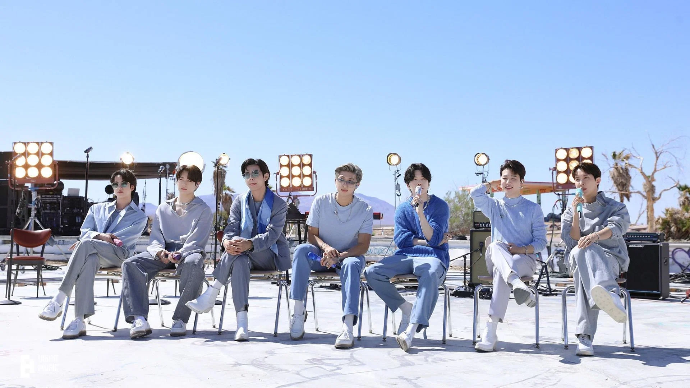
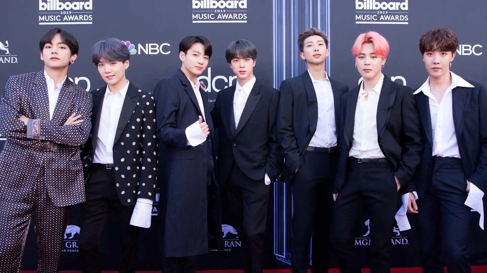

Discover the Magic of BTS!
BTS, also known as the Bangtan Boys, is a South Korean boyband formed in 2013. The group consists of RM, Jin, Suga, J-Hope, Jimin, V, and Jungkook. BTS has gained global popularity for their dynamic performances, meaningful lyrics, and dedication to spreading positive messages about self-love, mental health, and resilience.
With multiple chart-topping hits, record-breaking albums, and an ever-growing fanbase known as ARMY, BTS continues to push boundaries in music, fashion, and social impact.
Visual Highlights
 
Achievements
🏆 First Korean group to debut at No. 1 on the Billboard 200.
🎤 Grammy nominations for Best Pop Duo/Group Performance.
🌍 Record-breaking world tours with sold-out stadiums.
📈 Billions of views on YouTube for their iconic music videos.
Notable Songs
🎶 “Dynamite” - Their first all-English song that topped charts worldwide.
🎶 “Butter” - A catchy summer hit that broke numerous records.
🎶 “Fake Love” - A powerful anthem about heartbreak and authenticity.
🎶 “Spring Day” - A song about longing and hope, resonating deeply with fans.
Fun Facts
✨ BTS stands for Bangtan Sonyeondan, which translates to "Bulletproof Boy Scouts."
✨ Their fanbase, known as ARMY, stands for "Adorable Representative M.C. for Youth."
✨ BTS members are heavily involved in songwriting and producing their own music.
✨ They are known for their philanthropy and have donated to various social causes.
Inspirational Quotes
- “Love myself, I think that’s more important than loving others.” – RM
- “We’re all born to be real, not to be perfect.” – Jungkook
- “You should always have hope, even in the darkest times.” – Suga
- “I want to be a source of strength for you.” – J-Hope
- “The world is full of people who love you, so don't forget to love yourself.” – Jin
- “Life is tough, but so are you.” – Jimin
- “In the end, you’re your own best friend.” – V